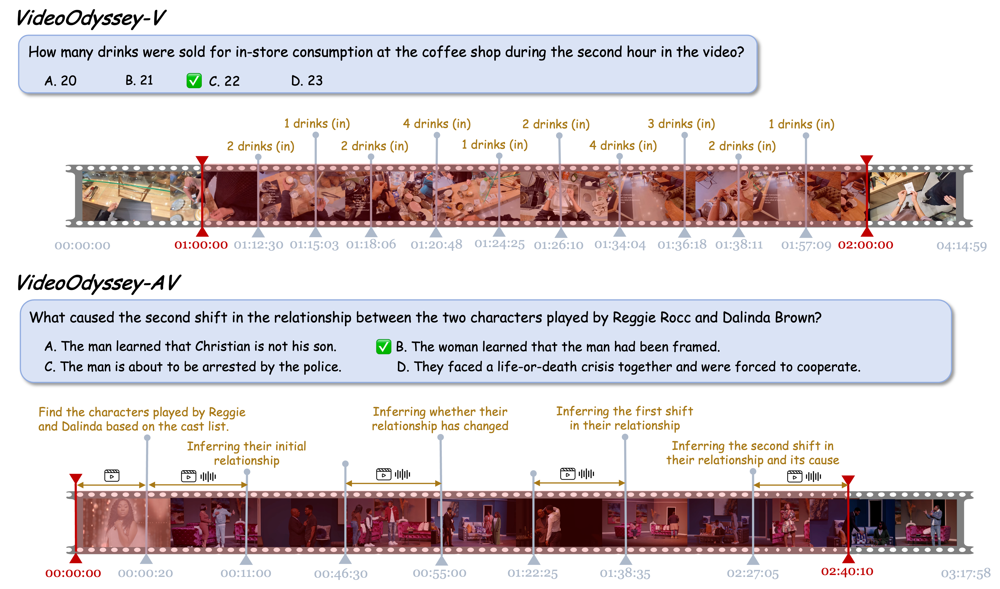

Examples from VideoOdyssey. Models need to consistently attend to detailed cues and build continuous logical chain of events across ultra-long time spans.
Introduction
Real-world long video understanding requires models to perform continuous tracking, information integration and memory retention over massive temporal spans within extreme video durations. Mastering this intense cognitive load constitutes the fundamental bottleneck in long video understanding. While existing benchmarks have driven progress by scaling up video duration, their evaluation tasks often require comprehending only short and isolated video segments, falling short of capturing the challenge of ultra-long-context reasoning. To measure this cognitive load, we emphasize continuous certificate length, defined as the video length a human must continuously watch to definitively answer a given question. Driven by this metric, we introduce VideoOdyssey, a benchmark specifically designed for ultra-long-context and omni-modal video understanding. VideoOdyssey is characterized by three key features: 1) Extreme video duration and diversity: spanning 11 domains and 54 subcategories with an average video duration of 109 minutes; 2) Comprehensive evaluation scenarios: offering two subsets to address different research focuses, i.e., VideoOdyssey-V for probing the limits of visual understanding in MLLMs, and VideoOdyssey-AV for evaluating synchronized audio-visual understanding for omni-modal models; 3) Ultra-long and multi-level continuous certificates: extending the average continuous certificate to 16 minutes for VideoOdyssey-V and 12.8 minutes for VideoOdyssey-AV. Crucially, we design 5 granular levels from seconds to hours, providing a comprehensive diagnostic tool to evaluate models across varying context lengths and cognitive loads. Extensive evaluations show that bottlenecks of current MLLMs extend beyond simple retrieval to include struggles with continuous reasoning across varying context lengths, fine-grained perception, and non-verbal omni-modal understanding. We hope VideoOdyssey will spur the development of next-generation MLLMs toward genuine real-world video understanding.